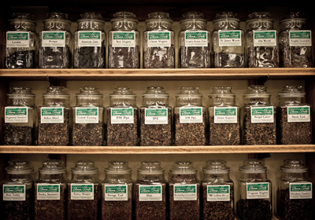

Winnipeg's Foremost Selection of Tobacco

Tobacco
House Blends
Cavendish
- Amaretto Amore The amaretto flavor of this delightfully aromatic Virginia-black cavendish blend fills the mouth with pleasure, as does its liqueur counterpart. Why amore? Because you will "love" the way this tobacco holds its flavor all the way down the bowl.
- Apricot Brandy This tobacco's extremely enticing aroma is derived from the skillful blending of five tropical flavors with brandy. Ribbon-cut black cavendish is seasoned with high-grade, flue-cured Virginia and Kentucky burley tobaccos for a rich, generously sweet flavor.
- Brandywine Blended from superior golden African Virginias, burleys and mild black cavendish tobaccos. Unique vanilla and chocolate flavors create an excellent taste and aroma.
- Brookfield Rich black cavendish, blended with burley for a cool, sweet smoke and charming aroma.
- Cherries Jubilee Popular demands was the inspiration for this cherry tobacco. Three deliciously different cherry flavors - refreshing Duke, fermented Maraschino and rich Kansas Sweet - grace this balanced blend of lemon Virginia and black cavendish.
- Columbian Mocha A smooth, medium mixture of black cavendish and Virginia tobaccos enhanced by the rich fragrance of dark chocolate and mellow Colombian coffee beans. This is one of our most popular blends.
- Eastgate A silky smooth, golden cavendish with a pleasant nutty aroma.
- English Butterscotch Premium-grade and beautiful. This elegant mixture is made with flue-cured bright Virginia tobaccos from Canada, the United States and Brazil blended with black cavendish and lightly flavored with a subtly fragrant butterscotch topping. Satisfying smoking and pleasant aroma will make this many smokers favorite tobacco.
- Georgia Peach This flavor has delighted American palates as far back as the Revolution. The basic combination of orchard fruit and honey can be found in the desserts known to have delighted Presidents Jefferson and Madison. A delicate balance has been achieved here. There is the real tobacco taste of the fine Virginias and burleys and black cavendish but then there's always the hint of sweetness, the faint aroma of some fine confection. This is a classic.
- Highland Whiskey Mild to medium flue-cured Virginias from Zimbabwe and the Carolina's blended with sweet black cavendish and a hint of toasted white burley. Generously laced with aged whiskey from the Scottish highlands for a distinctive flavor.
- Hornblower Developed with flue-cured tobaccos from the fields of Zimbabwe and Milawi. Blended with sweet processed black cavendish and mild burley tobaccos. Fanciful fruit and vanilla flavoring awakens this blends outstanding taste and evocative aroma.
- Longbottom Leaf Blended with the world's finest quality golden red Virginia tobaccos and a full touch of aromatic black cavendish - "This great Dane doesn't bite!" A loose ribbon cut.
- New Haven Ribbon-cut for ease of packing and good burning. The addition of vanilla and aged black cavendish give this blend a light but distinctive flavor.
- North Sea Our mildest black cavendish blend. Additional steam and heavy heat pressure create this light aromatic blend. A loose cut.
- Norwood This tobacco is as appealing to the eye as it is to the palate. Shag cut golden cavendish with a dash of fire-cured black for contrast. A lovely hazelnut aroma.
- Paradise Found Stoved and naturally aged, dark brown and black cavendish. The essence of wild cherry and raspberry create a sweet smoke with a delightful aroma.
- Pimlico Golden crimp cut Cavendish with a touch of Black fire-cured. Delightful bouquet and flavor with no bite or harshness.
- Raspberries in Cream This is an elegant aromatic with the fragrance and flavor of fresh red raspberries in cream. Soft, light-bodied, artfully flavored, with mild American Virginia and black cavendish, this blend is delicious all the way down the bowl.
- Red River This medium mixture is unusual for an aromatic tobacco. It is composed of black cavendish and Carolina ribbon, and has had a rich vanilla and caramel aroma aged into the leaf using an English heat-seasoning process. This tobacco has an extra measure of softness along with its refined, sweet flavor.
- Stephen's Special A well-balanced blend of fire-cured and deep brown cavendish with a mellow flavor and exquisite aroma.
- Strawberry Fields Here is a cool, refreshing aromatic tobacco with the fragrance and flavor of fresh strawberries lightly laced with rum and a hint of citrus. Light-bodied, refined, sweet without being cloying, this mixture of lemon and orange Virginias and premium black cavendish makes a delightful smoke.
Traditional Blends
- Balkan Blend A classic style medium balkan mixture prepared from rich, stoved, eastern and middle belt strip; Cyprian latakia; lemon Carolina; and the finest Greek oriental tobaccos. There have been many requests for this type of tobacco in bulk.
- Bengal Lancer Related to our Drones Club and Orient Express mixtures with a similar base this is the fullest of the group. Dark with latakia, rich and satisfying without being overbearing.
- Northern Comfort A really distinctive Virginia flake that will satisfy many aromatic smokers who have been sacrificing cleanness of burning to obtain a sweet aroma. It is often found preferable by those who have been smoking the various sweet, black tobaccos, traditional aromatic cavendishes, and many standard aromatics because of its cooler, dryer smoking qualities and its natural tobacco taste.
- Orient Express Soft and sweet, rich in light orientals and Carolina tobaccos with somewhat less latakia than Bengal Lancer. This is a fine all-day tobacco.
- Regimental Standard It is rich with latakia, spiced with the finest oriental leaf, mellowed with stoved Virginia and aged into a deeply satisfying, harmonious blend of the world's most exotic tobaccos.
- Turkish Evening A rich, full oriental mixture made for the modern taste. It is stout with lots of smoke cured latakia and fragrant Turkish, with just enough naturally sweet matured Virginia for interest and balance. Then it is aged under pressure for several months to develop a tobacco that will bring the smoker so much pleasure he will howl like a banshee.
Blending Components
- American Burley A high-grade cavendish-cut Kentucky burley, refined by heat seasoning along with a small amount of Virginia. It offers big, uncomplicated burley flavor, yet is soft and smooth. A versatile blending component, it is also an excellent full-flavor smoke by itself.
- Ashley's Cavendish Jet-black fire cured semi-sweet tobaccos discreetly flavored to produce a mild, slow, burning, cool smoke. Ideal for blending or to smoke alone.
- Burley Sandwich This rich burley blend is pressed before cutting to give it a rubbed-flake appearance and a density in smoking that assures coolness. A hearty tobacco with burley's characteristic depth of flavor made smooth by an exclusive heat-seasoning process.
- Latakia Top-grade, smoky, black latakia comes in bales from Cyprus. Cut in ribbon form for use in blends. It is cool-smoking with a woodsy, smoky aroma. Add it to medium mixtures to create a "fuller" blend.
- Midnight We feel smokers will find this to be sweeter, more refined and more satisfying than any tobacco of its type on the market. It burns slowly, is extremely soft and holds its rich flavor all the way down the bowl.
- Pastry Shoppe A light bodied blend of seasoned, ribbon-cut, lemon tobaccos from Brazil. A delightful morning smoke which provides a unique pastry aroma.
- Perique Rare and precious, this dark, fragrant condiment tobacco - cured in wooden casks - is from St. James Parish, Louisiana, where it has been produced in time-honored fashion since the days when the natives pressed it in tree trunks. Use it sparingly in your blends for its distinctive aroma and cool smoking character.
- Portage Trail Mild Maryland burley with a subtle hint of sweetness.
- Red Virginia A sweet, exceptionally soft, fully-rubbed matured Virginia cake, is a wonderful blending tobacco as well as a fine, medium-bodied straight smoke. This is an extremely high-grade, refined product.
Economy House Blends
- Outback Cavendish A rich, dark mixture of Danish and American toasted cavendish. Hints of wildberry, mocha and vanilla bean combined in a well-balanced blend.
- Piccadilly A traditional English style blend. A variety of matured Virginia flakes - broken and partially rubbed out - with just the right amount of latakia, perique and Turkish added.
McClelland Tobacco - tinned
Matured Virginia
- No. 22 Virginia A balanced blend of eastern and middle belt Virginias aged in cakes to develop their natural sweetness. A zesty tobacco with rich undertones, coarse enough to smoke on windy days outdoors but easily rubbed out to suit any occasion.
- No. 24 Virginia An unusual form of flake tobacco, its deep chestnut color results from the extended aging of full flavored old and middle belt leaf very lightly seasoned with drama. A smooth, robust tobacco good anytime for those who prefer the darker Virginia flavors. It is especially well suited for outdoor smoking.
- No. 25 Virginia A balanced mixture of the smoothest and most refined red and black aged Virginia cake tobaccos in a fully-rubbed form. Ideal after dinner when a rich, satisfying flavor is most desired.
- No. 27 Virginia An excellent all-day, indoor smoke, this beautiful, orange-red, shag-cut cake has a mellow flavor and a light, subtle aroma.
- Navy Cavendish With this tobacco, we reintroduce the smoker to the traditional navy cavendish, pressed in cakes and aged naturally with dark Jamaican rum to achieve its rich depth of flavor, color and aroma.
Oriental Mixtures (English Style)
- Mixture No. 1 Exceptional smoothness and light aroma make this mild mixture an ideal morning and indoor smoke as well as a pleasant change of pace for matured Virginia smokers.
- Mixture No. 6 A balanced, old-style medium mixture, its robust flavor is due to liberal use of middle and eastern belt orange Virginias. This is an invigorating all-day or outdoor tobacco, both satisfying and refreshing.
- Mixture No. 8 An extremely refined medium mixture, a soft, round flavor due to the fully-rubbed matured red cake tobaccos forming its base. Lightly sweet, smooth and rich, a truly mellow smoke.
- Mixture No. 12 Rich and full-flavored, especially appealing in the evening; still, spiced gently enough with latakia and Turkish leaf to be a superb occasional tobacco for the individual who normally prefers lighter mixtures and matured Virginias.
- Mixture No. 14 Dark with latakia and black Virginias, deeply seasoned with orientals, this is the classic full Scottish mixture.
Personal Reserve
- Blackwoods Flake The characteristic, natural sweetness of mellow, red Virginias mingles inextricably with the richness and inherently spicy aroma of black stoved Virginias in this doubly aged red and black all Virginia cake mixture. An artistic achievement in tobaccos for the pipe, this beautiful mottled flake is incomparable in smoothness, balance and refinement.
- Dark Star Years before tinning, this tobacco begins as bright yellow, sugary top-grade Virginia and Carolina leaf. Through careful triple aging, pressing and stoving, it becomes rich, cool and dark. A seductively spicy aroma develops during the extended maturing process to complement the complex flavor of this concentrated, smooth broken flake, which is easily rubbed out to suit any situation.
- St. James Woods A highly sophisticated broken flake of matured red and black stoved Virginias pressed with the finest Louisiana perique. This beautiful, mottled tobacco has an especially deep; rich character with that mysterious and compelling aroma that is perique's alone. A truly satisfying delight for natural Virginia smokers.
- Bombay Court An exotic oriental mixture spiced with the finest, rare Turkish tobaccos, cut wide and enhanced by the naturally aromatic, cool character of just enough smoky latakia. Matured Virginias fine-cut from aged cakes add their naturally sweet, full flavor to round and balance this superb blend.
- Bombay Extra Based on bombay court, with more darkened Virginias, a touch of perique and increased latakia, resulting in an enriched version of a unique and very popular formula. This blend provides added depth and complexity for those seeking a richer, fuller oriental mixture for after dinner and evening enjoyment.
- British Woods Full, rich and dark, heavy with fragrant latakia, spiced with premium Macedonian tobaccos. Lightly sweetened with matured Virginias, this distinguished oriental mixture is slow-burning and cool smoking. It offers richness and depth plus unparalleled smoothness and refinement.
Craftsbury Collection
- Virginia Woods Formulated for a smooth, rich flavor with an incomparable woodsy aroma. Blended from the finest matured red cake, stoved black Virginia, wide-cut bright Virginia and other premium tobaccos, Virginia Woods offers one of the ultimate expressions in fragrant matured Virginia blend smoking.
- Deep Hollow Far into the woods, away from the urban cacophony, is where this lightly fragrant blend of rich, red and black stoved Virginias is designed to transport you. Relax and enjoy the moment.
- Grey Havens A harmonious blend of lightly fragrant matured Virginias and white burley with just a hint of Louisiana perique. You experience the rich taste of fine natural tobaccos and those around you enjoy a mellow and pleasing fragrance.
- Frog Morton An exceptionally dark, rich and full latakia mixture designed for those who desire really satisfying latakia flavor but want a tobacco soft enough to smoke all day. It took Frog Morton four years to perfect this unique blend designed for smoking in quiet serenity. It is his proudest achievement.
- Frog Morton on the Town Frog Morton formulated this exceptionally mellow blend, fragrant with basma, smooth and rich with latakia, for his evenings at the opera. This is an elegant companion to the original soft, full latakia blend.
- Frog Morton on the Bayou When floating on the Bayou, Frog Morton prefers this fine balkan blend to which he adds just enough precious Louisiana perique.
221 - B Series
- Black Shag Sherlock Holmes kept it in the toe of a Persian slipper nailed to the mantelpiece. It was dry and strong. Kept at what we today have deduced to be proper smoking moisture and smoked gently, this excellent stoved shag will provide hours of smoking pleasure. Examined the ash carefully.
- Arcadia It was said to be of such arresting character and delicacy that it stopped all conversation. Holmes recognized it by its characteristic fluffy, white ash. It was Dr. Watson's favorite. It is our hope that this formula, deduced after careful study of several vintage examples of what was known as the original and made available to us by dedicated collectors, will please the most discriminating smokers.
- Honeydew The sweet, fragrant Honeydew was all gone by the time Susan Cushing offered the container to Sherlock Holmes, but he was undoubtedly familiar with this fine Irish flake's gratifying flavor, pleasing aroma and gentleness on the palate.
Limited Edition
- Christmas Cheer Continuing a tradition McClelland began in honor of their 15th Anniversary, they introduce each year a limited edition, vintage tobacco of exceptional quality and unusual character.
Danish Pipe Tobacco - tinned
Orlik
- Golden Sliced A hint of Louisiana perique adds zesty new life to the flavor of flue-cured Virginia tobacco. A traditional flake slice cut.
- Honeydew The finest qualities of our light burley and flue-cured Virginia tobaccos liberate the natural excellence of this light loose and ready rubbed cavendish blend. Straight cavendish cut.
- Scotch Type The exquisite appeal of this mild ready rubbed cavendish displays the fine distinction of its blend of flue-cured Virginia and light burley tobaccos. A straight cavendish cut with a dash of highland malt.
- Dark Kentucky Flake Blending fine black cavendish with the irresistible qualities of Kentucky burley give this flake a look, taste and feel uniquely its own. A flake slice cut easily rubbed-out.
- We also stock Dunhill, Erinmore and MacBaren premium tinned tobaccos.
Tips for Enhanced Smoking Pleasure
- Filling Your Pipe:
- Always fill your pipe in layers. An evenly, firmly packed pipe will burn slower and cooler.
- Lighting Your Pipe:
- An even light can only be obtained by lighting twice. Light your pipe as uniformly as possible, lightly tamp the tobacco and light your pipe again.
- Smoking Your Pipe:
- You want slow cool smoke. Draw gently on your pipe and savor the flavor of the tobacco. Relax and enjoy the moment. Remember, pipes are to be tasted, not inhaled.
- Caring for Your Pipe:
- Keep your pipe clean and sweet smoking. Use pipe cleaners frequently to remove any residue and always empty your pipe of all ash and any unused tobacco as soon as you are done smoking.